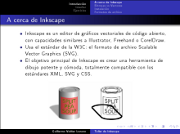
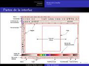
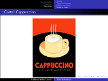

Movimiento Libre
Colección de ideas.
Publicaciones escritas por guivaloz
Consejos para una Informática Ecológica
2008-05-17 15:30 - guivaloz


Ante una nueva era donde hay más conciencia por la conservación del medio ambiente nos vemos en la necesidad de buscar mejores alternativas, más eficientes energéticamente hablando, de nuestros equipos informáticos. Las nuevas tecnologías del Kernel Linux, los fabricantes de equipos de cómputo y los usuarios debemos de hacer esfuerzos por lograr disminuir el consumo de energía en pro de nuestro mundo.
Descargar
Renovar la licencia de automovilista en Lerdo, Durango
2008-02-18 10:20 - guivaloz
El mes pasado dediqué una mañana a cumplir con las obligaciones ciudadanas de pagar predial, tenencia y refrendos. Aproveché la vuelta para que mi esposa renovara su licencia de manejo, sin saber la cantidad de trámites y traslados que debía hacer.
En este mes llegó mi turno, tenía que renovar mi licencia de manejo y pasar por los mismos trámites que había tenido mi esposa. Decidí documentar minuciosamente todo el proceso. Lo que a continuación expongo es un ejemplo de la desconsideración que tienen algunas autoridades con el tiempo y recursos de nosotros los ciudadanos.

PHP4 ha muerto, larga vida a PHP5
2008-02-02 11:20 - guivaloz
PHP es un lenguaje de programación interpretado que nació con la intención de elaborar páginas web dinámicas. Gracias a que es software libre y de que puede operar en la mayoría de los sistemas operativos (GNU/Linux, MacOS, Windows, sólo por mencionarlos) es hoy en día el lenguaje de programación libre más usado en aplicaciones web.
PHP4 tiene siete años de haber sido liberado y PHP5 lleva tres. La principal diferencia entre ambas versiones está en la mejor implementación de la programación orientada a objetos. Si estudiáramos dos sistemas que hicieran exactamente lo mismo, donde uno estuviese programado en PHP4 y el otro en PHP5, los códigos (o sea los programas) serían muy distintos uno del otro.
Cirugía nasal
2007-09-29 14:00 - guivaloz
Los días pasaron tan rápido como el agua y la fecha de hubiera deseado que no llegara, llegó. Ni modo… a aguantarse como los machos (pero tuve tanto miedo como ni se imaginan) y a pensar en que vale la pena todo esto por respirar mejor. Eso ocurrió ayer viernes, un via crucis inolvidable.

Taller de Inkscape
2007-08-16 22:45 - guivaloz
  
Con motivo del aniversario del Grupo de Usuarios de GNU/Linux de La Laguna participaré con un Taller de Inkscape. Esta es una presentación breve que explica lo que es el dibujo vectorial, las ventajas del Inkscape y muestra los ejercicios hechos.